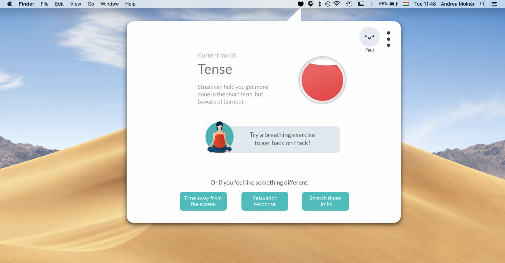
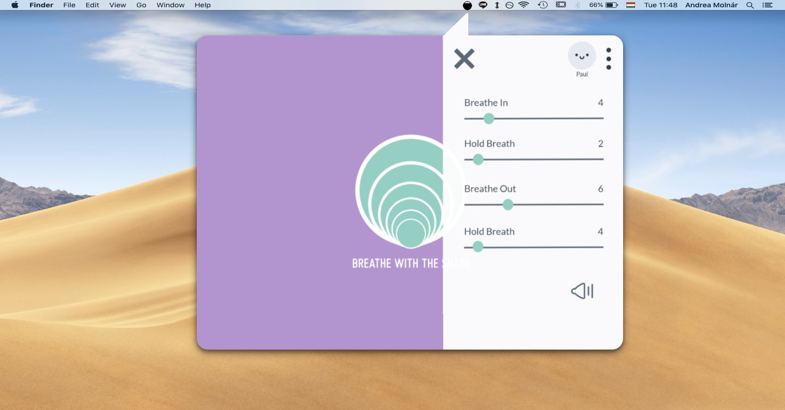

Foca

Too often, when trying to get work done with a computer, time is spent unproductively, aimlessly scrolling through news feeds and pushing documents around without real engagement. On the other hand, when we are productive, we often don't take breaks and strain ourselves until we develop an awful headache. Foca is an application that aims to help users stay in “the zone” while working – to keep up the ideal level of focus for productivity. It does so by measuring the user’s level of stress (ranging from disinterest through focus to acute stress) real-time, and suggesting activities to increase motivation or decrease stress when needed.
My role & tasks
User research
Wireframing
UX & UI design
Research
The idea for the project sprang out of my and two university classmate's fascination with various psychological theories which explain the reason behind motivation and productivity. The most influential were the Flow theory and the Yerkes-Dodson framework. Flow refers to a feeling of complete immersion in the activity a person is carrying out, which is possible when the presented challenge and the person’s competence in the given field is both high. Flow is a marvelous feeling; in it, a person is fully immersed in a feeling of energized focus, a complete involvement and enjoyment in the process of the activity.

The Yerkes-Dodson framework complements this theory by saying that performance increases with physiological or mental arousal (stress), but only up to a point. When the level of stress becomes too high, performance decreases. The optimal level of arousal is different for every person and type of activity they are performing.
All three of us in the design team were intrigued by the thought of helping people experience these moments of productive focus more often. So, the starting question for the design process was; how to translate these psychological findings into a digital product? How might we help people stay ‘in the flow’?
Design process
The psychological frameworks suggested the solution could be the measurement of stress levels: too little engagement results in apathy, too high stress risks burnout. After discussing different options for how to measure stress (such as wearable heart rate monitors), we have settled on an open-source webcam-based technology, which can assess users’ stress levels in real time.
The question then was; how can we allow people to monitor their stress levels in a way that is readily available at any time, but isn’t distracting? And, once they realize their stress level is too high or too low for ideal performance, what can they do about it?
Providing feedback
Our first idea was to couple the software with a physical product, a small lamp that users could place on their desks, that would change color according to the person’s stress levels. However, after further research, we’ve decided against it, as the information displayed may be too private for an office setting.
Instead, keeping in line with the original idea of creating a readily available but non-intrusive method of feedback, we have decided to place an icon in the computer’s menu bar. A filling circle represents the user’s state; half-full means ideal levels of concentration, filled circle equals stress, empty equals apathy.
The menu bar icon, indicating a tense user
Staying in the flow
Being conscious of one’s state is the first step; it is often all you need to snap out of mindless Instagram-feed-scrolling, or to take that little break. After having found a non-intrusive, yet accessible way to give feedback about users’ states, the next step was developing helpful ways for users to cope with too much or too little stress. This is done via small, optional exercises and tasks.
In the case of too low arousal for instance, users can opt for a quick puzzle or memory game, in order to get a quick burst of extrinsic motivation to carry on and get back on track. For a longer-term solution, developing and fostering intrinsic motivation is essential; Fova helps users achieve this by guiding them through a more comprehensive program of self-reflection. (These were developed in line with psychological research about how to increase and maintain motivation.) On the other hand, high stress is combated with prompts to take breaks, or suggesting built-in breathing exercises.
 Conclusion & Reflection
What I've learned from this project:
- In this project, me and my team relied on psychological findings as a base for meaningful design solutions, and found it to be a viable option! I’m looking forward to connect psychological research with design in my future projects.
- Dare to think outside the box; while we ultimately discarded the hardware accessory idea for providing feedback to the user about their state, it felt liberating to consider options beyond the obvious.